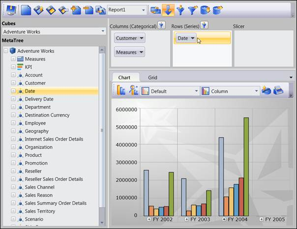
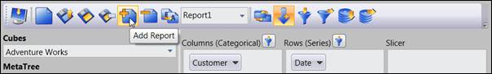
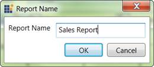
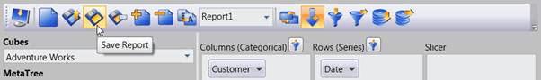
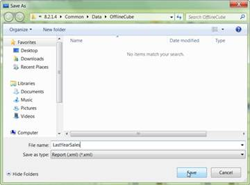
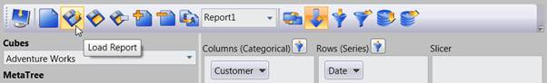
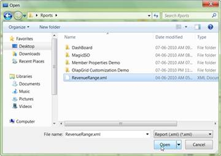

To create a report:
· First the client should connect to a Data source, a server or an Offline cube.
· Select the elements from the Cube Dimension Browser and drag and dropping them in the required axis. The report will be created.
· You can drag and drop any number of elements in any axis.
· Once you finish the drag and drop of elements, you can store the current report.
o To add a report, click Add report and provide a name for the new report.
· You can also add another report to the current report set and add the elements to a newly created report. You can add any number of reports to the current report set.
· Once you finish creating all the reports you can store the current report set as an XML file or to a Stream:
o To save the report set as an XML file, click Save and provide the name for the XML file.
o To store the report set in stream, use the GetReportStream() method and get the report as stream and then store it in anywhere.

Figure 44: Drag and Dropping Elements from Cube Dimension Browser to Axis

Figure 45: Adding a new Report to current Report Set

Figure 46: Entering the name for New Report

Figure 47: To save the created Report set as xml file

Figure 48: Saving the Report set as xml file by giving the name of the file
You can also load the saved report set by using the load option.

Figure 49: To load the existing report set (xml file)

Figure 50: Loading the Reports from saved xml file